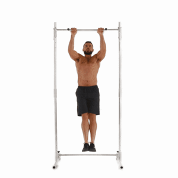
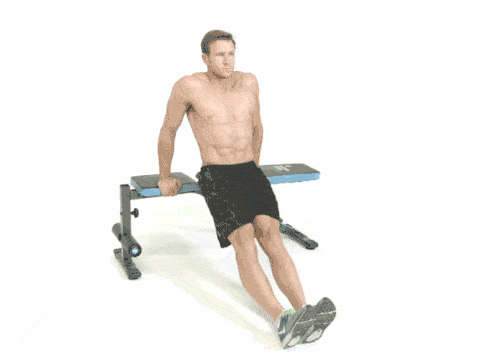

Exercise
Push Up

Traditional pushups are beneficial for building upper body strength. They work the triceps, pectoral muscles, and shoulders. When done with proper form, they can also strengthen the lower back and core by engaging (pulling in) the abdominal muscles. Pushups are a fast and effective exercise for building strength. They can be done from virtually anywhere and don’t require any equipment. Doing pushups every day can be effective if you’re looking for a consistent exercise routine to follow. You will likely notice gains in upper body strength if you do pushups regularly. For the best results, continue to add variety to the types of pushups you do. You can also follow a “pushup challenge“ where you gradually increase the number of pushups each week. You can work up to doing 100 reps in two months.
When performing a pushup:
- Keep your back straight and your core engaged.
- Your butt should be down, not lifted.
- Your body should form a straight line. Don’t arch your back or let your body sag down.
Partner of ONE HUNDRED PUSHUPS
Get Started*
Sit Up
Situps are classic abdominal exercises done by lying on your back and lifting your torso. They use your body weight to strengthen and tone the core-stabilizing abdominal muscles. Situps work the rectus abdominis, transverse abdominis, and obliques in addition to your hip flexors, chest, and neck. They promote good posture by working your lower back and gluteal muscles. With a larger range of motion, situps target more muscles than crunches and static core exercises. This makes them an ideal addition to your fitness program. Read on to learn about some of the benefits of situps, how to do them, and variations.
To do this:
- Lie on your back with bent knees and your feet anchored.
- Tuck your chin into your chest to lengthen the back of your neck.
- Interlace your fingers at the base of your skull, cross your arms with your hands on opposite shoulders, or place your palms down alongside your body.
- Exhale as you lift your upper body up toward your thighs.
- Inhale as you slowly lower yourself back down to the floor.
Pull Up
A pullup is an upper body strength training exercise. To perform a pullup, you start by hanging onto a pullup bar with your palms facing away from you and your body extended fully. You then pull yourself up until your chin is above the bar. Pullups are different than a chinup. With a chinup, your palms and hands face toward you. The pullup is considered an advanced exercise. It’s more difficult than the chinup. But the pullup can be modified or done on an assisted machine for beginners, and you’ll still get benefits from these variations.
Friendly options:
- Start by hanging from the pullup bar for 10 to 30 seconds. You’ll begin to strengthen the muscles in your arms and back that are needed to complete a pullup.
- Look for an assisted pullup machine at your gym to practice.
Advanced options:
- Try adding weight with a weight belt or vest.
- Do pullups one-handed.
Chair Dip
Looking to stay fit without a gym membership or any expensive equipment? Bodyweight exercises, like chair dips, are simple, effective, and easy to incorporate into your routine.Chair dips target the muscles on the back of the upper arms. While the biceps on the front get a lot of attention, you’ll want to focus on the entire arm for the best strength and overall tone.Best of all? Most people can do chair dips safely at home. You can also up the challenge by trying different modifications.
How to do proper chair dips:
- Sit on your chair or bench with your arms at your side and your feet flat on the floor, hip distance apart.
- Position your hands so that your palms are down beside your hips. Your fingers should grip the front of the chair seat.
- Move your torso forward off the chair with your arms extended. Your buttocks should hover over the floor and your knees should be slightly bent. Your heels should touch the floor a few inches in front of your knees.
- Breathe in as you slowly lower your body, hinging at the elbows until each forms a 90-degree angle.
- Breathe out as you push up to your starting position with your arms fully extended.